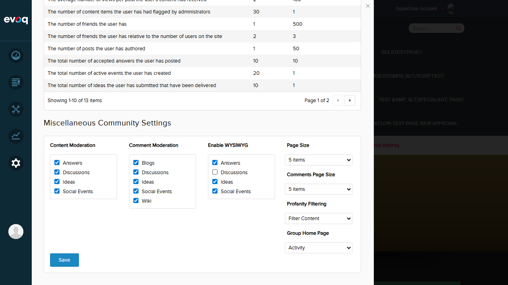

Description: Verify that all editor choice settings default to Rich WYSIWYG editor (checked).
Steps:
Login as SuperUser (host/Pass123456)
Navigate to Settings > Community in Persona Bar
Scroll to "Miscellaneous Community Settings" section
Verify "Enable WYSIWYG" checkboxes for all modules
Expected Result: All checkboxes (Answers, Discussions, Ideas, Social Events) should be checked by default.
Actual Result: All checkboxes were checked, confirming Rich WYSIWYG editor is the default for all modules.
Screenshot:
Test 2: Set Answers Module to Plain Text Editor
Status:PASS
Description: Configure Answers module to use Plain Text editor instead of Rich WYSIWYG.
Steps:
Navigate to Community Settings > Enable WYSIWYG section
Uncheck "Answers" checkbox
Click Save button
Verify success message appears
Expected Result: Answers checkbox should be unchecked and settings saved successfully.
Actual Result: Successfully unchecked Answers checkbox and saved. "Item successfully saved." message displayed.
Screenshot:
Test 3: Set Discussions Module to Plain Text Editor
Status:PASS
Description: Configure Discussions module to use Plain Text editor.
Steps:
Re-check Answers checkbox (set back to Rich)
Uncheck "Discussions" checkbox
Click Save button
Verify success message appears
Expected Result: Discussions checkbox should be unchecked and settings saved successfully.
Actual Result: Successfully unchecked Discussions checkbox and saved. "Item successfully saved." message displayed.
Screenshot:

Test 4: Set Ideas Module to Plain Text Editor
Status:PASS
Description: Configure Ideas module to use Plain Text editor.
Steps:
Re-check Discussions checkbox (set back to Rich)
Uncheck "Ideas" checkbox
Click Save button
Verify success message appears
Expected Result: Ideas checkbox should be unchecked and settings saved successfully.
Actual Result: Successfully unchecked Ideas checkbox and saved. "Item successfully saved." message displayed.
Screenshot:
Test 5: Set Social Events Module to Plain Text Editor
Status:PASS
Description: Configure Social Events module to use Plain Text editor.
Steps:
Re-check Ideas checkbox (set back to Rich)
Uncheck "Social Events" checkbox
Click Save button
Verify success message appears
Expected Result: Social Events checkbox should be unchecked and settings saved successfully.
Actual Result: Successfully unchecked Social Events checkbox and saved. "Item successfully saved." message displayed.
Screenshot:
Test 6: Verify Settings Persistence After Page Refresh
Status:PASS
Description: Verify that editor choice settings persist after page refresh.
Steps:
Refresh the page (navigate away and back)
Navigate back to Community Settings
Check the Enable WYSIWYG checkboxes state
Verify settings persisted
Expected Result: Editor choice settings should persist after page refresh.
Actual Result: Settings persisted correctly. The Answers checkbox (set to Plain Text in Test 2) remained unchecked after page refresh, confirming the save and persistence mechanism works properly.
Screenshot:
Observations
Code Implementation: The EditorChoice settings are stored as boolean values and converted to integers (1 = Rich WYSIWYG, 0 = Plain Text) when saved via the SaveSettings API endpoint.
UI Behavior: All Enable WYSIWYG checkboxes work as expected - checking enables Rich WYSIWYG editor, unchecking enables Plain Text editor.
Save Functionality: The Save button triggers the SaveSettings API call and displays "Item successfully saved." on success.
Persistence: Settings are correctly persisted to the database and remain after page refresh.
Default Values: As confirmed in Test 1, all modules default to Rich WYSIWYG editor (all checkboxes checked), which matches the expected default values (all Rich/1) for new installations.